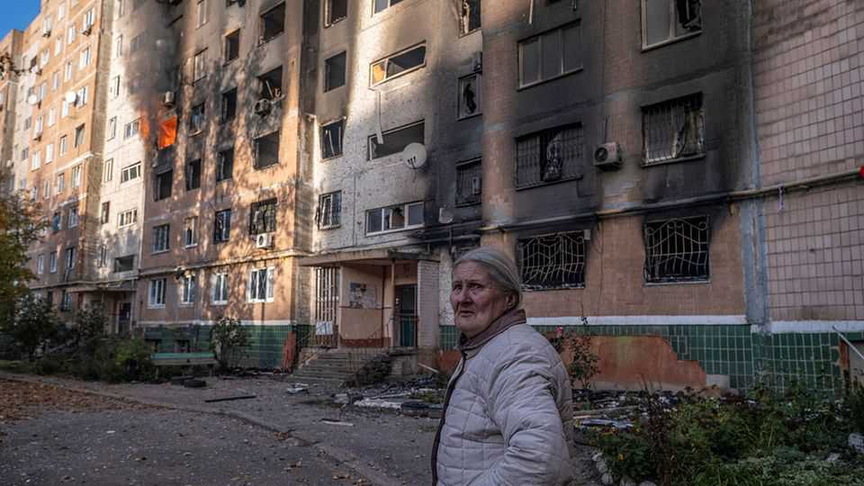

Donald Trump is in a hurry for peace in Ukraine. Vladimir Putin is not
The American-brokered talks leave many questions unanswered

Nov 12th 2026
IT WAS NOT the first time—or even the third—that Donald Trump had trailed a “big beautiful” peace for Ukraine. But his latest promise, made days before the first trilateral peace talks since February, set alarm bells ringing in Kyiv and European capitals. In the event, negotiations in Abu Dhabi over November 10th and 11th raised more questions than they answered.
The talks, which lasted just six hours, had set out to discuss the small matter of post-war European security. About the only firm outcome was a large prisoner swap, by now a ritual conclusion. The real test was due to come on November 12th when American negotiators Steve Witkoff and Jared Kushner took a set of ideas to Moscow for Vladimir Putin. These were understood to include “Article 5-style” security guarantees for Ukraine—from America, Britain, France and Germany, as well as NATO itself. For now, though, there is no expectation that Mr Putin will sign any sort of deal that strengthens Ukrainian’s security.
The Americans have dangled several sweeteners to coax Mr Putin into a deal. One is to plug Russia back into European energy markets (in breach of a new EU law). “Not a chance of us agreeing to that while the war is still raging,” added a senior Ukrainian official. Another is to discuss Russia’s dubious claims that Europe threatens its own security, something Mr Putin has been demanding since before his full-scale invasion in February 2022. “Discussing Europe’s security architecture with Putin is like asking a rat to approve the design of a rat trap,” wrote Andrei Kozyrev, a former Russian foreign minister, on X.
Russia’s wish-list is long enough to spin talks out indefinitely. The Economist understands Russian negotiators want guarantees that NATO will “stop expanding east” and a pledge that the alliance will cut forces and weapons near its borders. They also want Ukraine to declare neutrality and shrink its army. (Ukraine wants the reverse: Western support for a defensive army at least 800,000-strong.)
Ahead of the talks, American officials insisted any new arrangement would have NATO “remaining central to European collective defence” and would respect Ukraine’s sovereignty. A source close to the White House claimed the proposals had the backing of European partners and NATO. “Nobody has been able to solve this conflict while everyone is telling us how [to do so],” the official said.
Insiders say President Trump’s midterm defeat injected new urgency into the talks. The arrival of Democratic majorities in Congress in January offers a deadline to his main negotiators, who could face investigations over alleged conflicts of interest. For Russia, it may be the last chance to do a deal while Mr Trump controls Congress. Ukraine’s negotiators are privately sceptical of a breakthrough this year, but have been instructed to keep an open mind, if only to avoid annoying Mr Trump.
Ukrainians still assume things will get worse before getting better. The country enters winter with its energy infrastructure in its worst shape since the war began. Reserves and spare parts are running low. It has all but run out of Patriot interceptors, needed to destroy ballistic missiles. Russia, meanwhile, still has a stockpile of 700 such missiles, is producing another 110 a month, and is midway through a campaign to make Ukrainian cities, chiefly Kyiv, uninhabitable. It is destroying bridges, water systems and power grids. It would be odd for Mr Putin to stop now.
“Our American friends want a breakthrough,” the senior Ukrainian official says. “Seeing what the Russians are doing with our infrastructure, it’s hard to believe one is coming.” ■